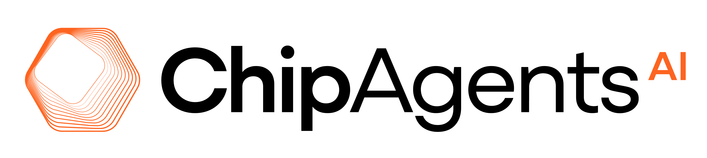
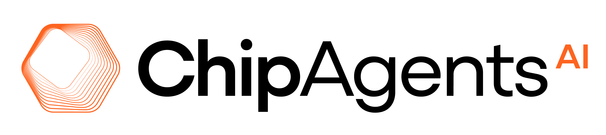

Overview
In the past few years, domain-specific accelerators (DSAs), such as Google's Tensor Processing Unit (TPU), have shown to offer significant performance and energy efficiency over general-purpose CPUs. However, DSAs require deep hardware knowledge to achieve high performance. Unfortunately, there are far fewer hardware designers than software developers. Leveraging AI techniques to further automate chip design becomes the key to meeting the need of rapid change in software development, which is also critical for democratizing hardware design and creating next-generation energy-efficient hardware.
This workshop will bring together leading researchers from academia and industry to explore the rapidly evolving intersection of artificial intelligence, particularly autonomous agents, and chip designs. The goal is to define a research agenda and identify new directions for NSF funding in this crucial area. The workshop will feature keynote presentations, panel discussions, and invited talks from top experts in the field.
Link to the AI for Electronic Design Automation Workshop (2024) website: https://ai4eda-workshop.github.io/
Attending
- Registration is required: please register through the link below.
Register Now - Registration fee: Students: $50, Non-Students: $100, Speakers and Panelists: Waived. You will receive a confirmation email upon successful registration, with instructions for fee payment.
- Discount code for the UCLA Luskin Hotel: You will see a discount code after registration.
- Detailed attending information →
Keynote
Parthasarathy Ranganathan
Speakers and Panelists
Anna Goldie
Ricursive Intelligence

Kartik Hegde
Cadence
LLMs in Production With Chip Teams: Opportunities, Challenges, and Lessons Learned
Chia-Tung (Mark) Ho
Nvidia
Azalia Mirhoseini
Ricursive Intelligence
Chi Wang
Cunxi Yu
University of Maryland, College Park
When AI Agents Meet Chip Design: The Power of Domain Knowledge
Zhiru Zhang
Cornell University
Filling in the Missing Pieces Toward Autonomous Accelerator Design
Organizers


Student Organizer
Weikai Li
UCLA
Sponsors
We gratefully thank our sponsors for their generous support of this workshop.
 
